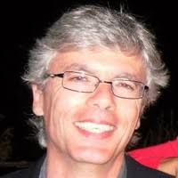
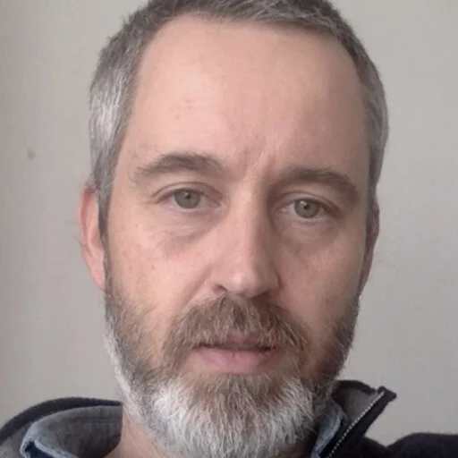
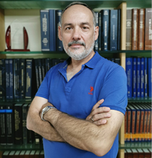

SUMMER SCHOOL IN LANGUAGE TESTING 2026
7th - 10th July 2026
Location: Universidade do Minho, Portugal
The Summer School in Language Testing is designed to offer intensive training in applied linguistics studies, targeting language testing competencies.
This summer school will consist of 4 seminar courses instructed by internationally and nationally prominent linguists and professionals. The training will address key topics in language assessment, including alignment with the CEFR in multilingual contexts, fairness in test design and scoring, digital language assessment (test design, usability and accessibility), and the development of pedagogical resources.
The program is tailored to provide teachers, educators, researchers, students and language practitioners with the essential theoretical and practical tools from the field.
Two courses will be conducted in Portuguese and the other two in English (or Spanish if all participants are comfortable with the language and all agree).
We are offering two places (full-pack) to PhD students. To apply, you should send a motivation letter and proof of enrolment in a PhD programme to our email address sslt25@elach.uminho.pt. This covers only the attendance fee; therefore the participant must bear all expenses of travel, accommodation, food, etc.
Courses
Only 30 places available!
*Note that Seminar 1 and 2 will be conducted in Portuguese and will be accredited training for teachers in Portugal by the Escola de Letras, Artes e Ciências Humanas, da Universidade do Minho. Aguardamos acreditação pelo Conselho Científico-Pedagógico de Formação Contínua (CCPFC).
SEMINAR 1. Provas justas em Português Língua Estrangeira: desenho, critérios de classificação, interpretação e atuação.
Instructor: Rui Vaz (Camões, I.P.)
- Fundamentos da equidade na avaliação de línguas
- Referenciais para a avaliação da equidade
- Fontes de enviesamento no desenho de testes de PLE
- Revisão de itens
- Aplicação e interpretação de critérios de classificação
SEMINAR 2. Elaboração de recursos didáticos: aprender português e em português.
Instructor: Fausto Caels (ESECS / Politécnico de Leiria; CELGA-ILTEC / Universidade de Coimbra)
- Integração curricular de minorias linguísticas
- Português como língua de escolarização
- Estratégias integradas de língua e conteúdo
- Práticas pedagógicas (exemplificação e treino)
- Projetos escolares para alunos migrantes
SEMINAR 3. Technology-Based Language Assessment.
Instructors: Jesús García Laborda (Universidad de Alcalá) & Teresa Magal Royo (Universitat Politècnica de València)
- Introduction to technology-based assessment
- Designing assessment items and multilevel language tests
- AI and language assessment (Cambridge projects)
- Ethics in digital assessment & anti-plagiarism tools
- Advanced features in standardized language testing
- Online Cooperative Language Testing
SEMINAR 4. Alignment with the CEFR in multilingual and migration contexts.
Instructor: Neus Figueras Casanovas (EALTA)
- What are the key steps in an alignment process?
- What resources are needed?
- Strategies for addressing any challenges that may emerge in any alignment process
- Preparing a plan for implementing an alignment project & reviewing/evaluating a Project
- The importance of documentation & reporting in valid alignment
Program
Speakers

Rui Vaz (Camões, I.P.)
Possui mestrado em Ciências da Educação e frequência do doutoramento em Educação (Tecnologias Educativas) pela Universidade de Lisboa. É licenciado em Línguas e Literaturas Modernas (Estudos Portugueses) e possui formação educacional na área do Português. Professor efetivo desde 1996, foi também formador de professores e colaborou na elaboração e revisão de materiais para Português Língua Não Materna e Português Língua Estrangeira. Desde 2007, está ligado ao Instituto Camões, onde desempenhou várias funções de coordenação e direção. Atualmente, exerce funções como Diretor de Serviços da Língua, no Instituto da Cooperação e da Língua, I.P.

Fausto Caels (ESECS / Politécnico de Leiria; CELGA-ILTEC / Universidade de Coimbra)
Doutorado em Língua e Cultura Portuguesa (Língua Estrangeira/Língua Segunda) pela Faculdade de Letras da Universidade de Lisboa. Professor Adjunto na Escola Superior de Educação e Ciências Sociais do Politécnico de Leiria (ESECS-IPLeiria) e Professor Auxiliar Convidado na Faculdade de Letras da Universidade de Lisboa. Coordena, na ESECS, o Mestrado em Didática do Português Língua Global, a Licenciatura em Tradução e Interpretação Português-Chinês e o Local para Aplicação e Promoção de Exames como Língua Estrangeira. Investigador Integrado do Centro de Estudos de Linguística Geral e Aplicada (CELGA-ILTEC) da Universidade de Coimbra, no grupo Discurso e Práticas Discursivas Académicas (DPDA). Os seus interesses de pesquisa englobam inclusão escolar de alunos de origem migrante, abordagens integradas ao ensino de língua e conteúdo, formação de professores, didática do português como L2/LE, didática da leitura e da escrita, linguística textual, pedagogia de género. Possui, adicionalmente, experiência profissional na área da tradução (neerlandês-português).

Jesús García Laborda (Universidad de Alcalá)
Dr Jesús García Laborda is a Full Professor of Language and Education at the University of Alcalá and former Dean of the Faculty of Education. His work focuses on language assessment, technology-enhanced testing, and teacher education. He holds a European PhD in Language Education and has an extensive international profile, collaborating with institutions such as the British Council. His research centers on computer-based language testing, interrater reliability, and the validation of high-stakes exams, while also exploring areas such as automated assessment and AI in language evaluation. He has published over 115 articles and contributed to numerous research projects. He has co-developed online testing platforms like OPENPAU and PLEVALEX and currently serves as President of the European Association of Languages for Specific Purposes (AELFE).

Teresa Magal Royo (Universitat Politècnica de València)
Dr Teresa Magal Royo is an accredited Full Professor with a PhD in Fine Arts and Associate Professor at the Universitat Politècnica de València (UPV), where she teaches Graphic Engineering, Design, and Communication. Her work combines visual communication, interface design, and educational technology, with a focus on digital learning environments. Her research centers on usability, accessibility, and user experience in educational contexts, particularly in language learning and assessment. She has co-authored over 40 publications on topics such as multimodal interfaces, listening assessment, and digital testing platforms. She has participated in numerous national and international research projects, including European initiatives, and is an experienced Erasmus+ evaluator. Her work integrates design, technology, and pedagogy to improve user-centered language assessment systems.
Neus Figueras Casanovas (EALTA)
She began her career as an English teacher and spent over 20 years coordinating foreign language curricula and certification exams for adult learners in Catalonia. She has participated in numerous international research and development projects in language assessment and has taught and presented widely across Europe, Asia and the USA. She has worked as a consultant in assessment and curriculum design for several international institutions and has collaborated extensively with the Council of Europe, including co-authoring the Manual for Relating Examinations to the CEFR. She is a founding member of EALTA and currently coordinates its CEFR Special Interest Group. She has received the 2015 British Council International Assessment Award and was named an Honorary Member of Trinity College London in 2022.
Attendance
In-person training.
In English (B2 level preferably).
All participants will receive a certificate of attendance issued by the SSLT organizing committee.
TARGET AUDIENCE
- Language teachers/educators/instructors.
- Language testing practitioners and designers.
- Researchers, particularly in the field of Language Teaching, Applied Linguistics and Educational Linguistics.
- Post-doctoral and PhD students in Language Teaching/Linguistics/Language Sciences or other scientific fields of study.
- All those interested in learning about language testing and assessment.
Fees & Registration
| General public | Language teachers/practitioners/instructors (residing/working in Portugal) | |
|---|---|---|
| 1 day | 100€ | 65€ |
| 2 days | 150€ | 75€ |
| Full pack (4 days) | 250€ | 85€ |
Venue
The conference will take place at the University of Minho, School of Arts and Humanities (ELACH), Portugal.
Organisation
The Summer School in Language Testing 2026 is a collaborative initiative by CEHUM (Universidade do Minho), along with CAPLE-ULisboa (Universidade de Lisboa), bringing together leading experts in language assessment. This initiative was created to bridge the gap between research and practice, offering high-quality training. By fostering international and national collaboration, the Summer School in Language Testing aims to equip educators, researchers, and language professionals with essential skills in language testing.
Organising committee
- Ana Espírito Santo (ULisboa, CAPLE)
- Ana Sarzedas (ULisboa, CELGA-ILTEC)
- Clara Setas (UMinho, CEHUM)
- Cristina Flores (UMinho, CEHUM)
- Idalete Dias (UMinho, CEHUM)
- Nélia Alexandre (ULisboa, CAPLE)